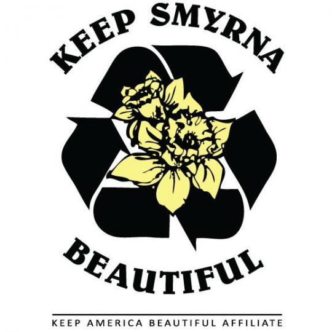

My 12 week bootcamp at General Assembly - Web Development Imersive class begins May 7, 2018. The GA instructors will be teaching us the skills to gain a career in web develpoment, from Javascript to Ruby on Rails.
♥ Learning is fun and even more when it enhances our skills! ♥
One of the highlights of volunteering was working with Hands On Atlanta where we were setting up a computer lab with donated Personal Computers. We made the February Magazine cover!
Over the years my volunteering has evolved from being a participant to photographer with most events doing both. My primary volunteering is with the Keep Smyrna Beautiful team and I have taken thousands of pictures reflecting their actvities. Clickhereto see some of the pictures.